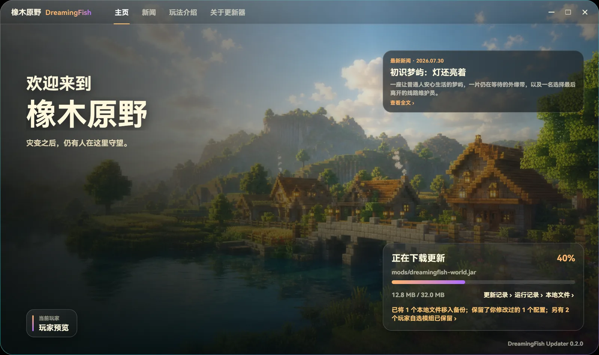
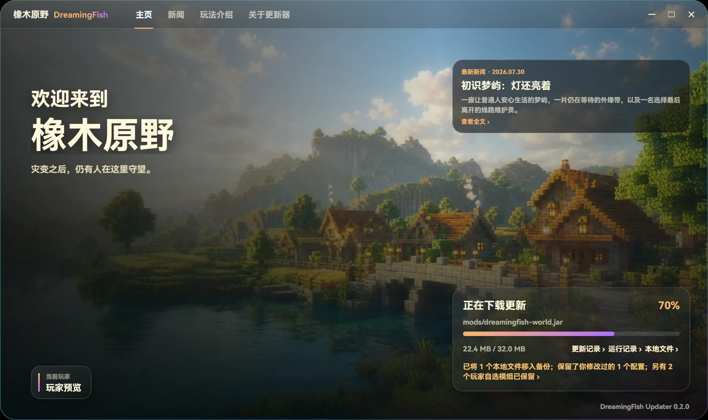
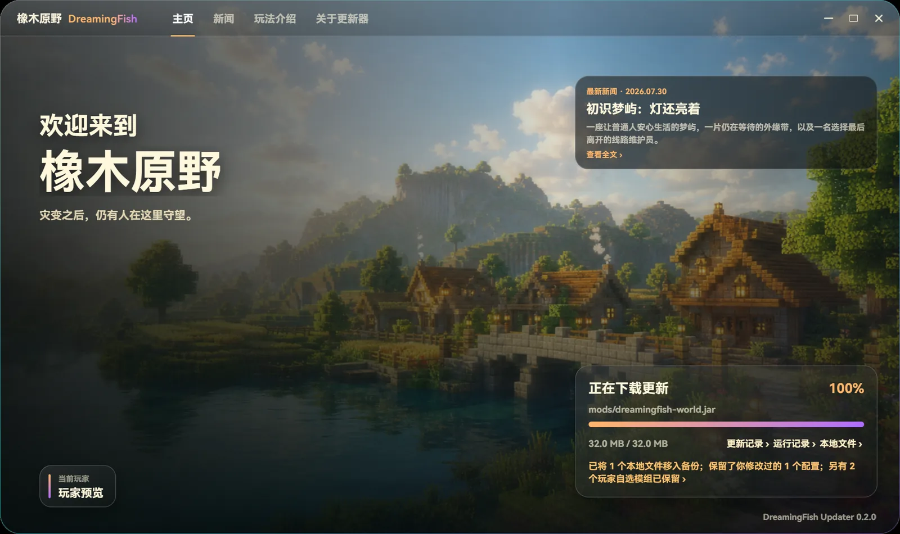
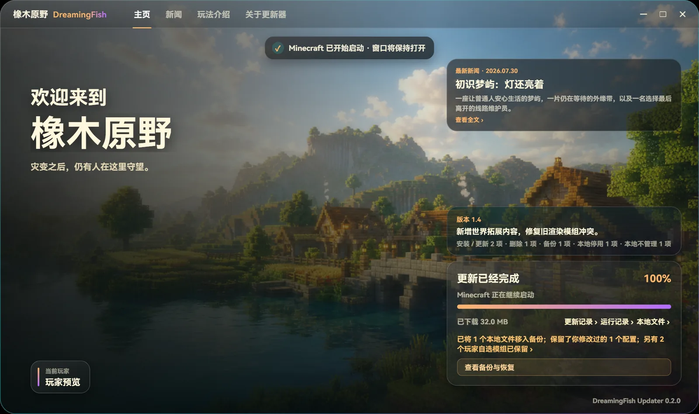

标准整合包目录服主维护想要发布的内容
玩家启动前
只处理本机差异
- 01
比较本地文件
玩家仍然从 PCL、HMCL 等启动器进入游戏，更新器在启动前自动比较本机文件与目标版本。
- 02
下载变化内容
只下载真正发生变化的文件，不必每次重新下载整个整合包；多个文件同时下载，大文件中断后也能接着传。
- 03
暂存并校验
新文件先写入临时位置，逐一检查大小与 SHA-256，确认完整后才会进入安装。
- 04
异常时恢复
替换前先完成备份；中途退出或安装失败时恢复到更新前的状态，不会留下更新到一半的客户端。
- 05
继续启动游戏
一切完成后，Minecraft 继续启动，玩家不需要再手动处理任何文件。



